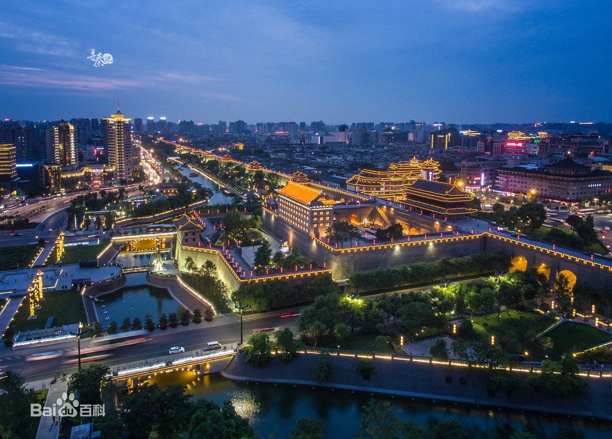
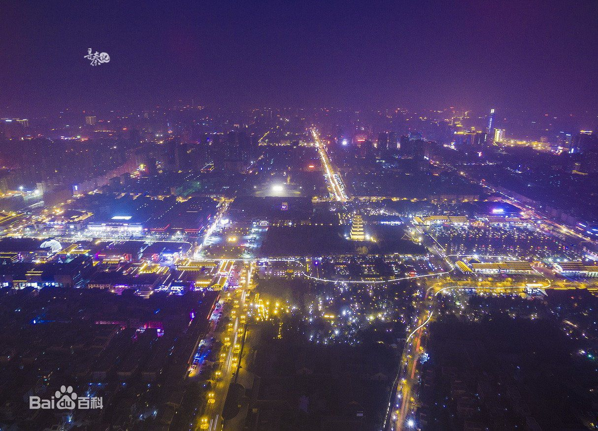

西安是国务院公布的首批国家历史文化名城，历史上先后有十多个王朝在此建都，是世界四大古都之一，是中国历史上建都朝代最多、时间最长、影响力最大的都城之一
西安市的地质构造兼跨秦岭地槽褶皱带和华北地台两大单元。距今约1.3亿年前燕山运动时期产生横跨境内的秦岭北麓大断裂，自距今约300万年前第三纪晚期以来，大断裂以南秦岭地槽褶皱带新构造运动极为活跃，山体北仰南俯剧烈降升，造就秦岭山脉。

西安境内河网密集，共有54条河流。其中，渭河、泾河及石川河系过境河流，其余河流均发源于秦岭山地或骊东南丘陵，绝大多数河流由南向北流经渭河平原注入渭河。黄河流域面积占全市总面积的98.46%